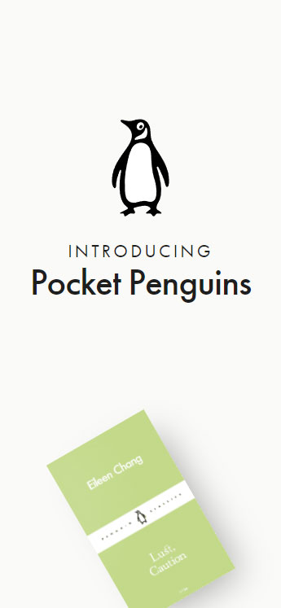
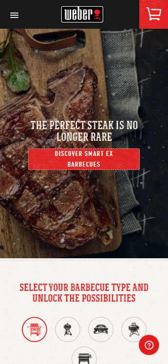

The futur website is a great example when it comes to contrast, its elements stands out on a dark background
and its effectivity use of this principle drives the user to a specific elements in the design.

Pocket Penguins website uses negative space effectively and the use of whitespace highlights the main
content and easily drives the users eye to the specific parts of the design and it also gives the elements a
room to breathe.

The use of the alignment principle on the weber website create a seamless connection to each element from
the logo on top up to the very bottom of the footer, its symetrical design is positioned effectively that
made all the content looks organized and in order.